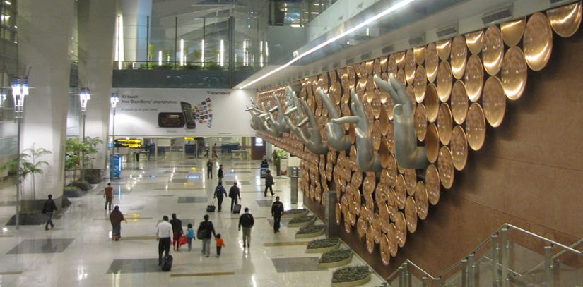
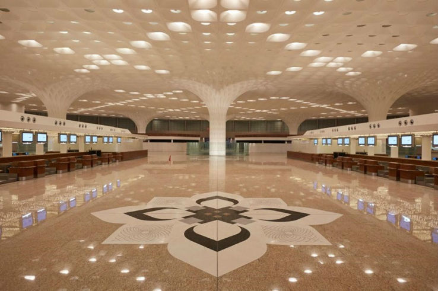
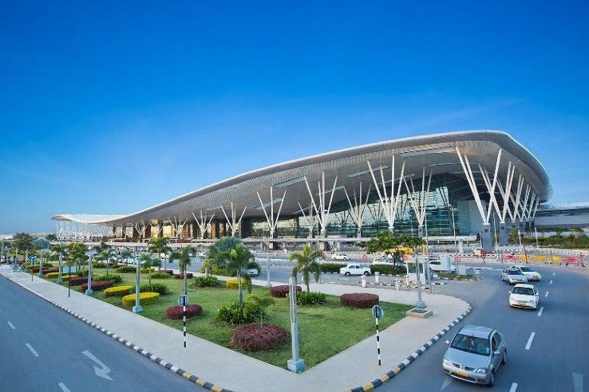
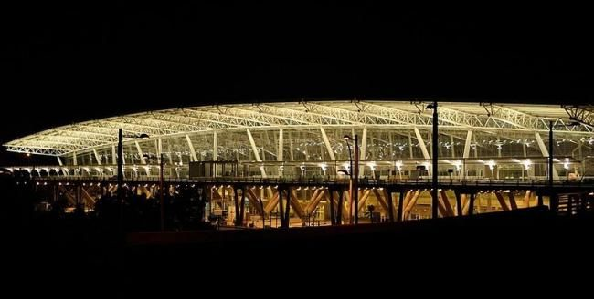
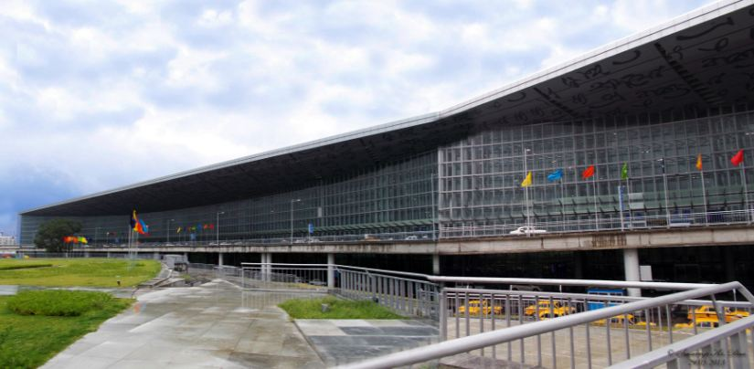
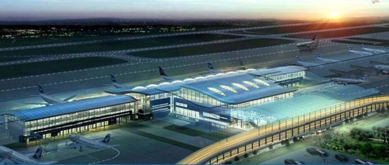
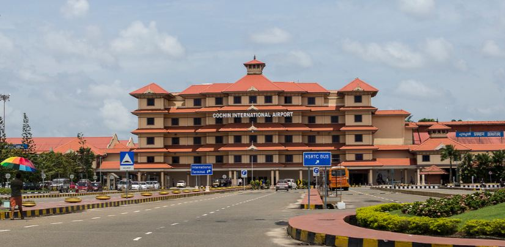
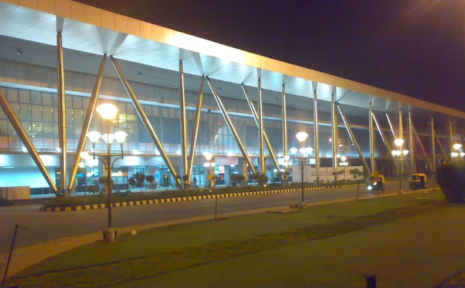
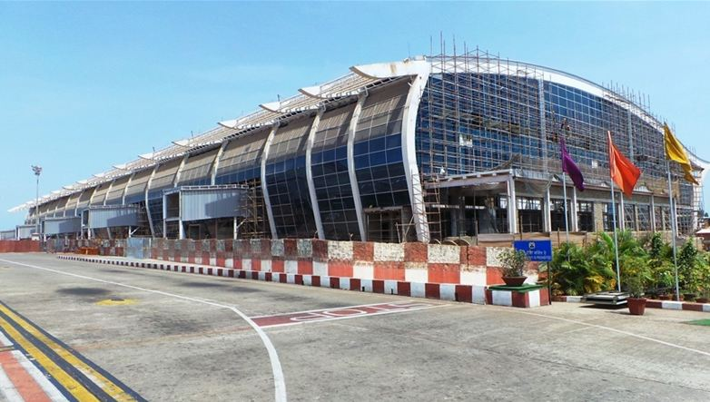
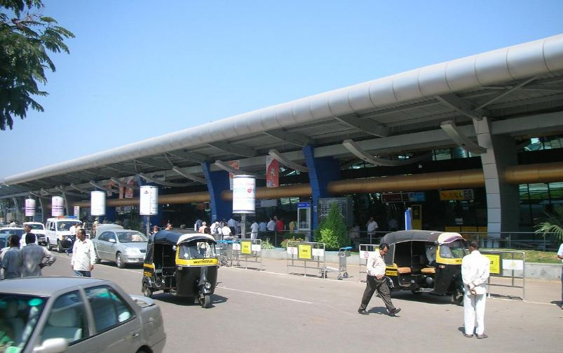

Scrollable Visualisation of 10 busiest airports in India
Welcome to airScroll
You can embed images and style text using html.
1. Delhi, Indira Gandhi International Airport
Indira Gandhi International Airport serves as the primary civilian aviation hub for the National Capital Region of Delhi. The airport, spread over an area of 5,106 acres is situated in Palam, 15 km (9.3 mi) south-west of the New Delhi railway station and 16 km (9.9 mi) from New Delhi city centre.Named after Indira Gandhi, a former Prime Minister of India, it is the busiest airport in India in terms of passenger traffic since 2009. It is also the busiest airport in the country in terms of cargo traffic.
2. Mumbai, Chhatrapati Shivaji International Airport
Chhatrapati Shivaji Maharaj International Airport formerly known as Sahar International Airport, is the primary international airport serving the Mumbai Metropolitan Area, India.Its passenger traffic crossed 45 million in fiscal year 2016-17.The airport is the second busiest in the country in terms of cargo traffic also.
3. Bangalore, Kempegowda International Airport
Kempegowda International Airport is an international airport serving Bangalore, the capital of the Indian state of Karnataka. Spread over 4,000 acres (1,600 ha), it is located about 40 kilometres (25 mi) north of the city near the village of Devanahalli. It is owned and operated by Bangalore International Airport Limited (BIAL).
4. Chennai, Chennai International Airport
Chennai International Airport is an international airport serving the city of Chennai (Madras), Tamil Nadu, India and its metropolitan area. It is located at Meenambakkam, 21 km (13 mi) from Chennai. It was the first airport in India to have international and domestic terminals located adjacent to each other.
5. Kolkata, Netaji Subhash Chandra Bose International Airport
Netaji Subhas Chandra Bose International Airport is an international airport located in Kolkata, West Bengal, India, serving the Kolkata metropolitan area. It is located approximately 17 km (11 mi) from the city center. The airport was earlier known as Dum Dum Airport In 2014 and 2015, Kolkata Airport won the title of Best Improved Airport in the Asia-Pacific region awarded by the Airport Council International.
6. Hyderabad. Rajiv Gandhi International Airport
Rajiv Gandhi International Airport is an international airport that serves Hyderabad, the largest city in the Indian state of Telangana. It is located in Shamshabad, about 24 kilometres (15 mi) south of Hyderabad. It was opened in March 2008 to replace Begumpet Airport as the primary commercial airport for Hyderabad.
7. Kochi, Cochin International Airport
Cochin International Airport is the first airport in India developed under a public-private partnership (PPP) model and was funded by nearly 10,000 non-resident Indians from 30 countries. It is the busiest and largest airport in the state of Kerala.
8. Ahmedabad, Sardar Vallabhbhai Patel International Airport
Sardar Vallabhbhai Patel International Airport is an international airport serving the cities of Ahmedabad and Gandhinagar in Gujarat, India. The airport also serves as a focus city for GoAir and Jet Airways.he airport is set to be replaced by Dholera International Airport due to expansion constraints.
9. Goa, Goa International Airport
Goa International Airport also known as the Dabolim airport, is the sole airport in the state of Goa. In fiscal year 2016–17, the airport handled over 6.8 million passengers handling roughly 131 aircraft movements a day.
10. Pune, Pune International Airport
Pune Airport is located approximately 10 km (6.2 mi) north-east of Pune in the state of Maharashtra, India. The airfield was established in 1939 as RAF Poona to provide air security to the city of Bombay (now Mumbai). The base was home to World War II squadrons of de Havilland Mosquito and Vickers Wellington bombers and Supermarine Spitfire fighter aircraft.
INDIA
You can embed images and style text using html.